最全Pycharm教程（31）——Pyhcarm实战
1、主题
介绍如何用Pycharm实打实的创建、运行、调试程序。
2、准备工作
Pycharm版本为2.7或者更高。
至少安装一个Python解释器，2.4到3.3均可
3、下载安装Pycharm
下载地址：this page
4、启动PyCharm
双击快捷方式（windows中为pycharm.exe或者 pycharm.bat；MacOS and Linux为pycharm.sh），进入欢迎界面Welcome screen：
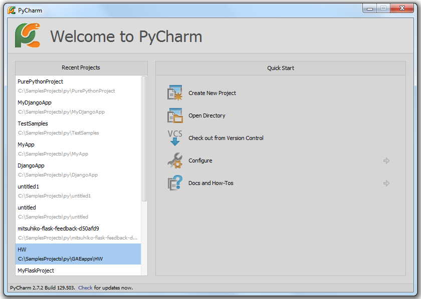
5、创建一个简单工程
单击Create New Project链接，进入创建工程对话框，进行相关工程设置。
当然，也可以通过主菜单命令File → New Project来随时创建新的工程：
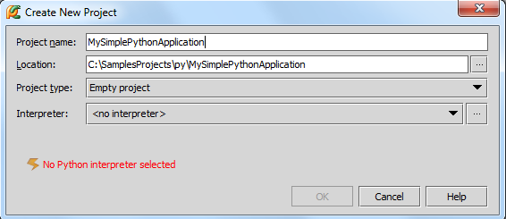
首先为工程命名，这里命名为MySimplePythonApplication。然后更改工程位置，既可以使用默认的位置，也可以通过单击浏览按钮来指定。
接下来选择工程类型，Pycharm预设了若干类型模板（Django, Google AppEngine等等），并默认创建相关文件。
这里我们选择Empty project类型（比较适合简单的Python工程），不需要Pycharm预设任何文件。
最后，指定Python解释器，在下拉列表中选择即可。
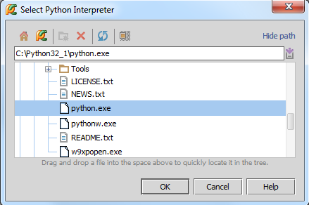
单击OK按钮，工程创建完毕。
6、浏览工程目录结构
初始工程目录 （Project tool window中）如下：
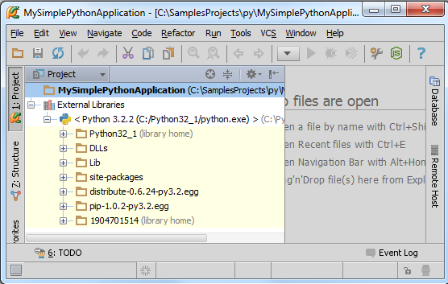
此时只存在工程根目录以及定义了Python解释器的External Libraries目录。
单击主工具栏的 按钮，选择Project
Structure页，查看详细工程目录信息：
按钮，选择Project
Structure页，查看详细工程目录信息：
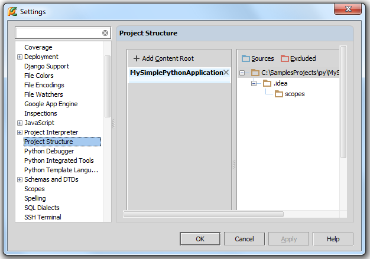
在工程根目录下的idea目录下存放了MySimplePythonApplication.iml文件，用以记录当前的工程结构；目录下还有若干XML文件，保存着相关的配置信息。idea目录在Project tool window窗口中是不可见的。
接下来向根目录中添加工作目录。在Project Structure页，右击工程根目录，选择New Folder：
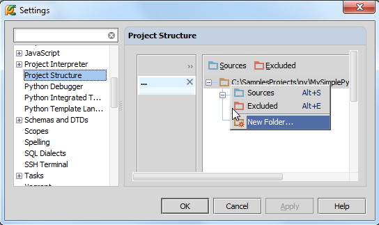
输入目录名称：
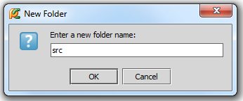
最后，将该目录标记问源文件根目录：选择src目录，单击，标记完成。
单击OK，关闭设置对话框。
当然添加目录的方式并不是唯一的，也可以直接在工程根目录下创建Python文件，此时工程目录被默认为源文件根目录。
7、创建Python类
在 project tool window窗口中选择src目录，按下Alt+Insert：
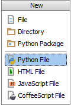
选择Python file，输入名称（Solver）：
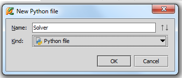
类创建完成，打开编辑：
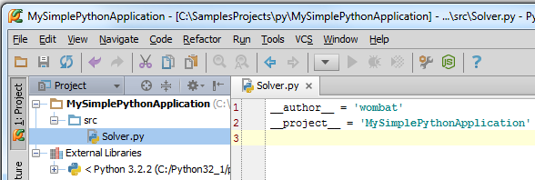
8、编辑源码
首先，文件中有两行默认生成的代码：
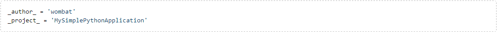
这是Pycharm根据模板 file template生成的，并自动替换了形式变量$PROJECT_NAME和$USER。
接下来我们编写一个求解二次方程的小程序。
在编写代码的过程中Pycharm会提供各种各样的提示帮助，例如在创建类时，只需输入关键字，则会弹出提示列表：
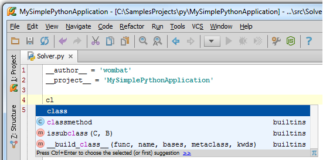
选择关键字class，输入类名（Solver），Pycharm会提示你继续输入：

此时右槽会显示错误标记，鼠标悬停在上方时会给出错误提示。右槽顶部的指示灯标记了当前的代码检查状体，绿色代表一切正常，黄色代表有警告，红色代表有错误。
继续创建“demo”成员函数，体会Pycharm代码的自动补全功能：

继续输入，未用到的变量以灰色显示：
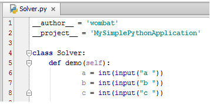
接下来计算判别式，用到了math模块，由于尚未导入，Pycharm会报错（红色波浪线和红色灯泡）。
红色灯泡的使用机制参见intention actions and quick fixes，格式问题为黄色灯泡，出现错误即为红色灯泡。
按下Alt+Enter查看Pycharm给出的提示：
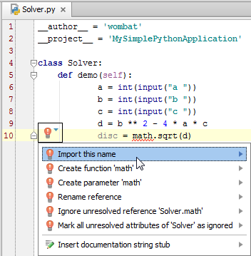
选择导入math库，然后晚上Solver类中的demo函数，计算判别式：
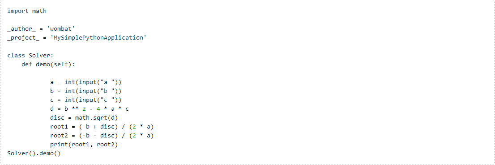
按下Ctrl+Shift+F10运行脚本文件，出现一个控制台，输入a、b、c的值，发现Pycharm遇到一个错误：
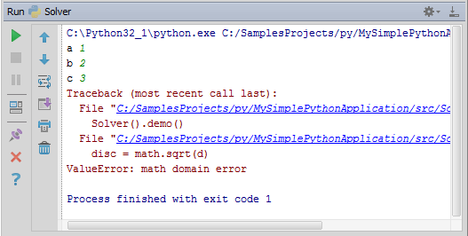
这里是当d（判别式）为负数时，程序报错。为了避免这种情况，加入判断语句Ctrl+Alt+T（Code→Surround with）：
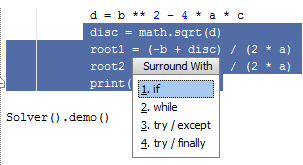
Pycharm会自动创建一个if语句结构。最后如果你希望多次执行该程序，需要再在外层嵌套一个while循环，代码最终效果如下：
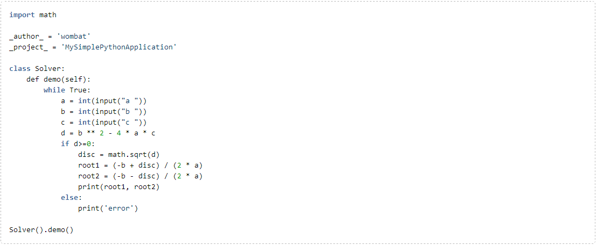
接下来，准备调试。
9、运行程序
三种运行脚本文件的方式：
（1）Ctrl+Shift+F10快捷键
（2）使用快捷菜单选项
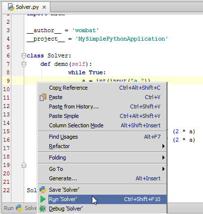
（3）使用主菜单的运行按钮
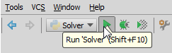
查看运行结果：
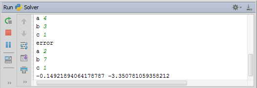
10、运行/调试相关配置
每个脚本文件在运行和调试时都按照指定的配置文件的规定（ run/debug configuration）执行，包括脚本名称、工作目录、预处理等等。
Pycharm已经预设了若干中常规的配置文件类型（针对Python scripts, Django applications, tests,等等），可以在Run/Debug Configurations dialog对话框中浏览这些配置。可以通过Run→Edit Configurations...命令或者单击主工具栏Run区域的下拉列表来打开这个对话框：
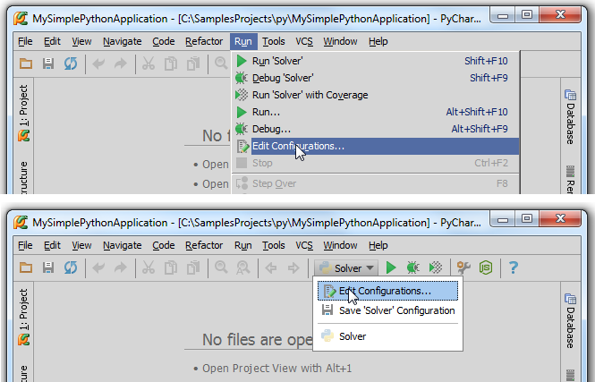
详细查看Edit Configurations对话框，其包含两个主要部分：Python 和 Default
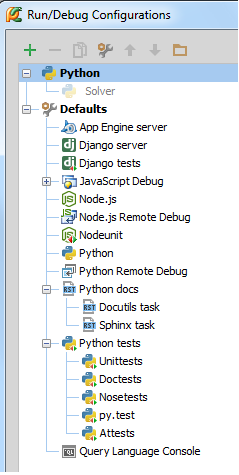
default run/debug列表下的内容是默认的配置信息，他们没有具体名字，但会根据类型自动加载使用。
上方名为Python的节点只包含一个灰色显示的配置文件Solver。它是一个临时配置文件 temporary profile，是Pycharm创建的缺省配置 default
configuration of the Python type。
你可以永久保存你的配置文件，数量不限。
11、调试程序
调试之前先设断点breakpoints，单击左槽即可：
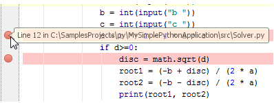
然后右击编辑区域，选择Debug 'Solver'：
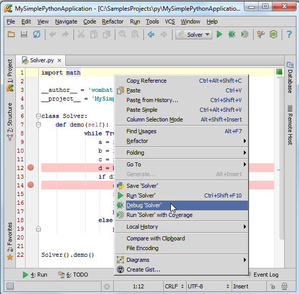
显示 Debug tool window窗口，调试开始，调试窗口的默认布局如下：
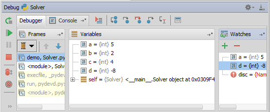
这里显示了框架、变量、控制台灯。当然如果你希望控制台一直可见的话，将其拖动到指定区域即可：
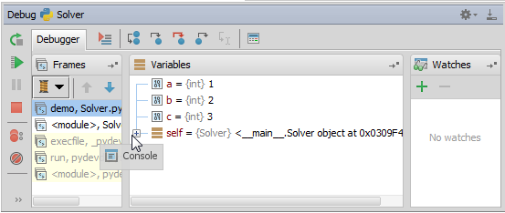
使用stepping toolbar buttons来单步调试：
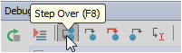
命中断点，对应行变蓝：
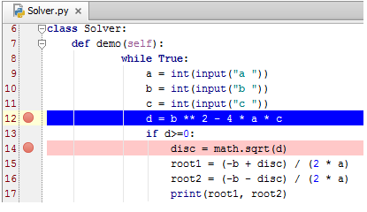
12、导航功能初探
假如你编程过程中中途中断，回来时不知道该从哪里继续开始，这就用到一个重要的导航功能：跳转到最后编辑位置。按下Ctrl+Shift+Backspace即可。
快速查看符号定义，例如将光标定位在sqrt的调用处，按下Ctrl+B，Pycharm会跳转到math.py的指定定义位置：
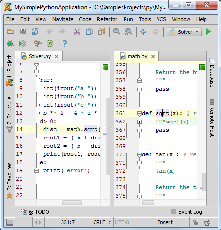
快速查找符号、类、文件。按下Ctrl+Alt+Shift+N，输入名称即可：
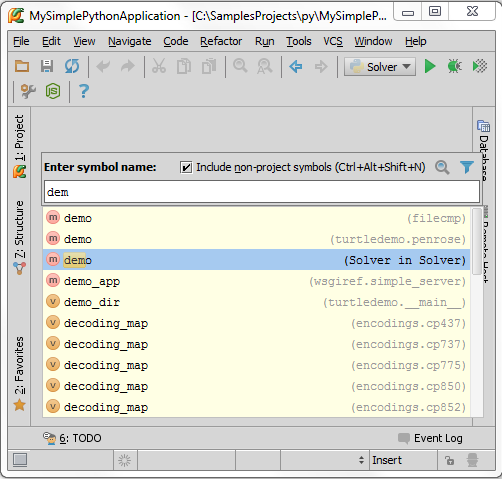
更多详情参见here。
13、代码重构
假如你更改了一个函数demo的名称，理论上对其所有的调用都需要进行更改，这里Pycharm提供了代码重构功能。
按下Shift+F6，在对话框中输入新名称：
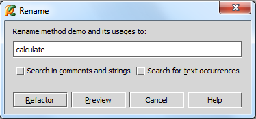
单击Refactor，在Find tool window显示查找结果：
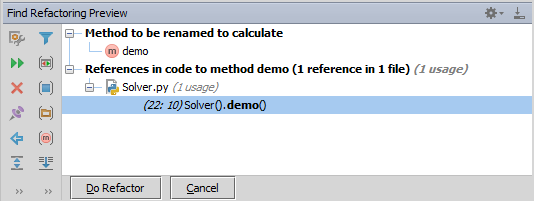
单击Do Refacto按钮完成替换：
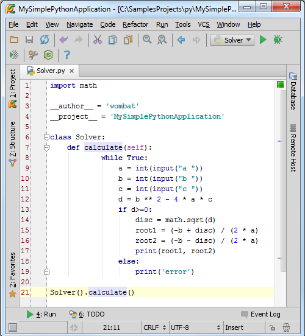
当然我们还可以做更多改变，例如移动文件位置、改变函数的参数结构、提取变量等。这些都属于各种各样的重构。我们会在以后的教程中详细介绍。